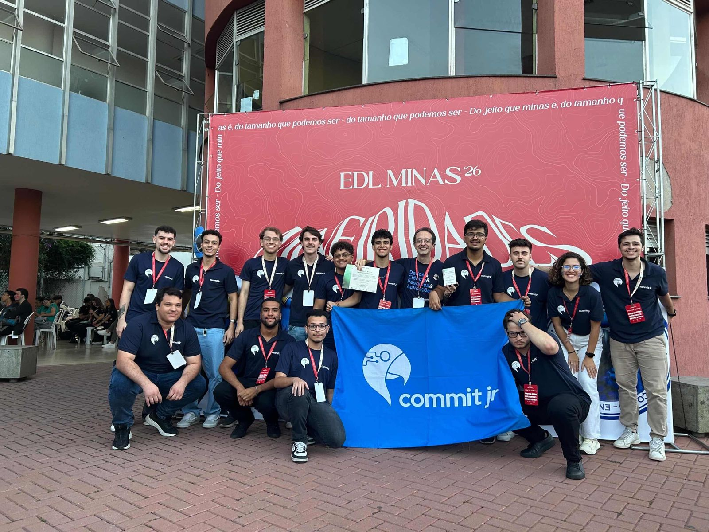
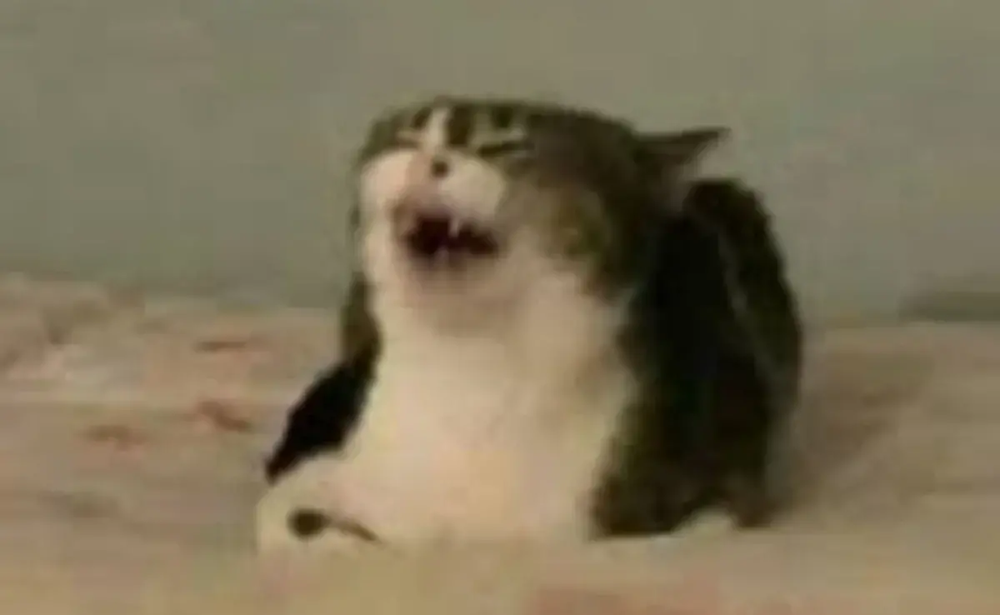

I'M WESCLEY JÚNIOR
Estudante de Engenharia da Computação. Focado em desenvolver soluções eficientes e aprender continuamente novas linguagens e tecnologias.

Minha Trajetória
Nasci em 7 de novembro de 2005 e resido na região de Betim e Belo Horizonte, Minas Gerais. Meu interesse por tecnologia me levou a ingressar no curso de Engenharia de Computação no CEFET-MG.
Ao longo do meu desenvolvimento acadêmico e profissional, direcionei meu foco para a engenharia de software e a construção de aplicações web. Minha rotina técnica é fortemente baseada em ambientes Linux e no uso de ferramentas de linha de comando. Além da programação tradicional, dedico tempo ao estudo contínuo de novos frameworks, segurança da informação e metodologias ágeis para gerenciamento de projetos.
Fora do escopo técnico, mantenho o hábito de estudar idiomas, jogar xadrez e acompanhar o desenvolvimento de novas ferramentas de inteligência artificial.

Galeria de Fotos




Experiência e Stack
Experiências Profissionais
Desenvolvimento de chatbots, landing pages, e-commerces e sistemas.
Atualmente Diretor de Projetos da Commit Jr, Empresa Júnior do CEFET-MG.
// GET /api/profile/wescley
{
"status": 200,
"data": {
"name": "Wescley Júnior",
"education": "Computer Engineering @ CEFET-MG",
"stack": {
"languages": ["C", "Java", "Python", "JavaScript",
"Shell Script"],
"frontend": ["HTML5", "CSS3", "React.js", "Figma"],
"backend": ["Django", "WordPress", "n8n"],
"environment": ["Linux", "Git", "Vim"]
},
"methodologies": ["Agile", "Scrum", "Kanban"]
}
}